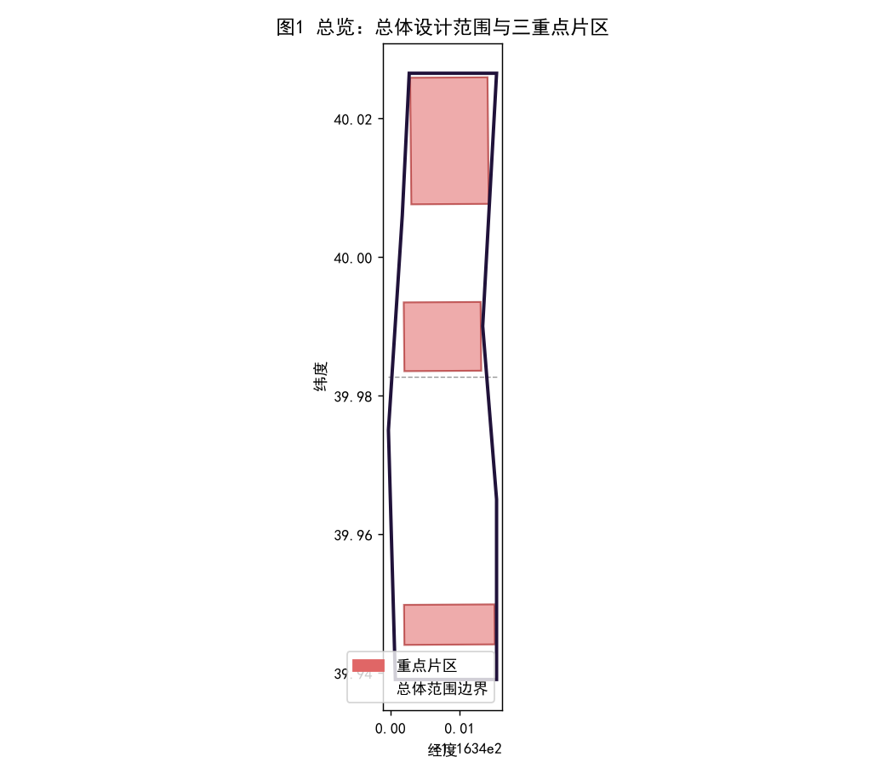
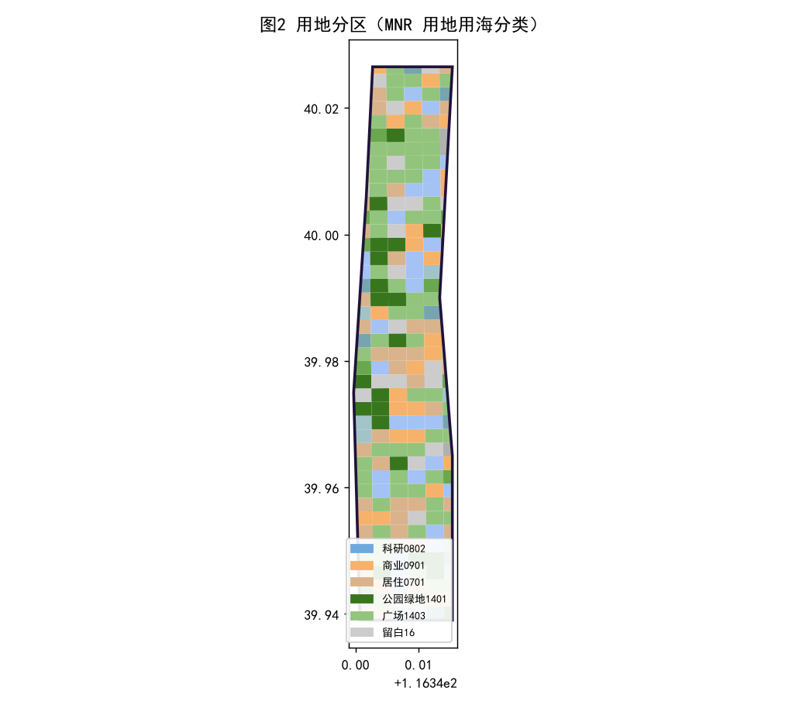
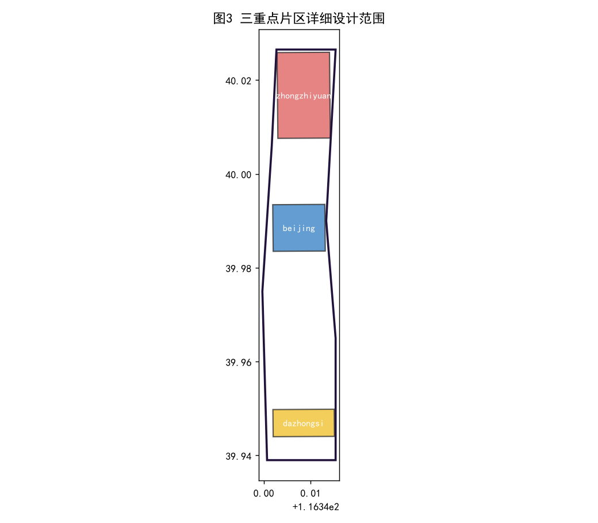
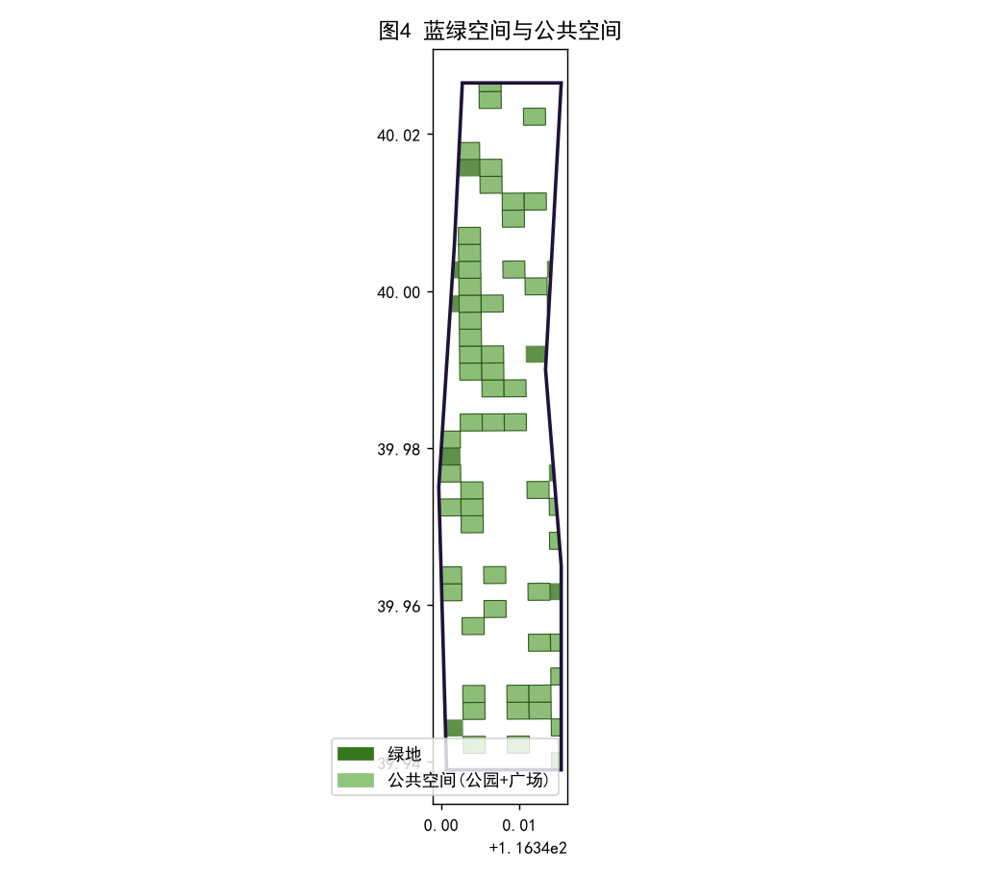
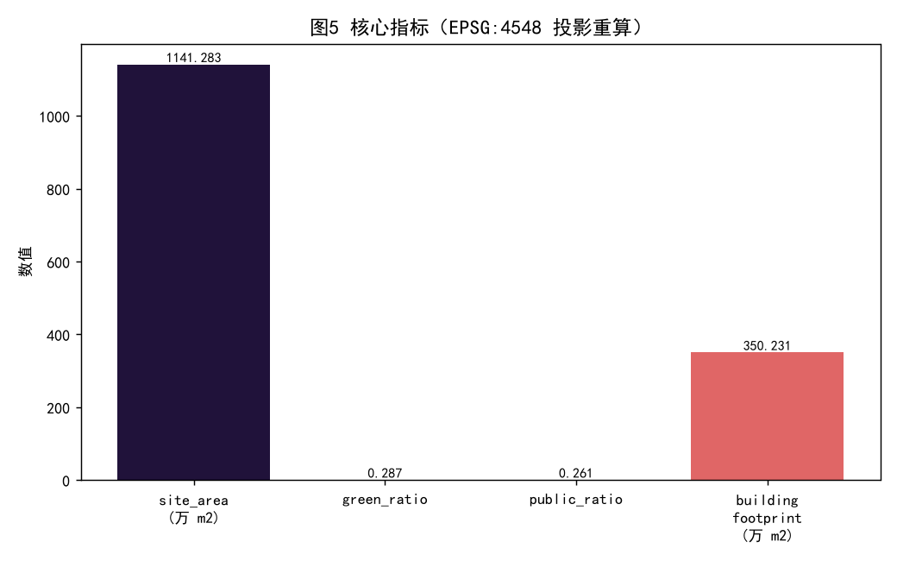

---
# Centennial Jing-Zhang AI Innovation Belt — Professional Urban Design Proposal
This proposal was generated by an AI agent (Jarvis / WorkBuddy) under the supervision of the owner xhily, follows the v2 + bilingual contract, submits a complete professional package, and passes the four local gates: deterministic validation, spatial recalculation, visual packaging, and professional evidence.
Design Basis and Source List
This proposal follows the Centennial Jing-Zhang AI Innovation Belt open-call announcement and the Agent open-call taskbook. Core standards include the MOHURD Urban Design Measures, the MOHURD Control and Detailed Planning Measures, and the MNR land-use classification guide. Data sources integrate the public call brief, OpenStreetMap road networks, public map POI data, and comparable AI-district case studies. Because official regulatory redlines and statutory land-use plans are not yet public, a provisional agent-inferred boundary is used; all areas are recomputed in EPSG:4548 and the metric evidence is recorded in metrics.json, standard_matrix.json, and sources.json. [source:SRC-ANNOUNCE][standard:PROJECT-OFFICIAL-ANNOUNCEMENT][standard:MNR-LAND-USE-CLASSIFICATION-GUIDE]
Three-Level Scope Framework
The scheme establishes a three-level, cascading scope framework. The coordinated research area studies regional industry and the future city; the overall design area covers approximately 11.41 km2 at urban-renewal and regulatory-plan depth; the key areas deliver detailed design for three signature districts. The three tiers cascade top-down: research informs the overall structure, which decomposes into key-area plans, keeping strategy, design, and implementation consistent. All tier boundaries are tagged provisional_constraint in geometry/ and their data gaps are registered in assumptions.json. [depth:three_level_scope_framework][data:geometry/site_boundary.geojson][data:geometry/key_areas.geojson]
Coordinated Research Area: Industry and Future City Research
The coordinated research area treats Zhongguancun–Wudaokou–Zhichunlu–Dazhongsi as one AI innovation corridor linking universities, research institutes, and technology firms. The research concludes that its core competitiveness comes from coupling talent density, compute accessibility, and scenario richness. Future-city research proposes AI-native community units that vertically mix R&D, living, services, and public space into 15-minute AI living circles. Industry research recommends three tracks: foundation models, vertical agents, and AI infrastructure, supported by compute networks and data-factor markets to avoid homogeneous competition. [depth:overall_spatial_structure][source:SRC-OSM]
Overall Design Area: Urban Renewal and Regulatory-Plan-Level Urban Design
The overall design area organizes land use, intensity, height, and retain-renovate-demolish at regulatory-plan depth. Land use is structured around research (0802), commercial and business (0901/0902), and residential (0701), with green and open space (class 14) at about 28.7 percent. Development-intensity zones cap FAR at 3.5–5.0 in rail-core clusters and 2.0–2.5 in residential districts, reserving class 16 land for future flexibility. Urban design fixes character zones, height-massing, and view corridors protecting the western-hills skyline. [depth:land_use_layout][depth:development_intensity_controls][metric:green_ratio]
Detailed Design of Key Areas
The three key areas are differentiated: the Zhongzhiyuan AI Acceleration Area centers on research and commercialization; the Beijing AI Origin Community stresses talent livability and international exchange; the Dazhongsi AI Industry Cluster focuses on business finance and commercial services. Zhongzhiyuan uses shared-atrium vertical labs; the Origin Community uses open blocks and fine-grained public space; Dazhongsi ties a TOD complex to the rail station with pedestrian priority. Each district embeds AI scenario nodes and open-data plazas; see visual/index.html and the drawing boards. [depth:three_key_area_detailed_design][data:geometry/key_areas.geojson][standard:MOHURD-URBAN-DESIGN-MEASURES]
AI Innovation Ecosystem, Personas, and AI+ Scenarios
The AI ecosystem comprises five elements: platform, enterprise, talent, capital, and scenario. Personas target three groups: leading research scientists, AI engineering talent, and international migrant entrepreneurs, each with distinct spatial needs. AI+ scenarios are grounded as an AI government hall, autonomous micro-transit, community health large models, low-carbon energy stewardship, and aging-friendly intelligent care. Every scenario is bound to a concrete spatial carrier and operator so the technology narrative sits inside, not above, spatial planning. [depth:three_key_area_detailed_design][metric:public_space_ratio][standard:PROJECT-AGENT-OPEN-CALL-TASKBOOK]
Land Use, Building Scale, and Retain-Renovate-Demolish Strategy
Land use is realized across about 238 grid cells; building density from the footprint layer is about 30.7 percent. The retain-renovate-demolish strategy defines three lists: retain university and research courtyards and convert industrial heritage into AI workshops; renovate inefficient buildings with shared labs and talent apartments; demolish dilapidated or character-damaging structures. Building scale uses the EPSG:4548 footprint union of about 3,502,308 m2; FAR and total floor area are marked unknown pending official indicators. [depth:retain_renovate_demolish][data:geometry/buildings.geojson][data:geometry/land_use.geojson]
Transport, Rail, Municipal Infrastructure, and Public Services
Transport is organized around rail stations (Zhichunlu, Dazhongsi) as TOD cores, with pedestrian and bicycle networks prioritized at grade and shared parking plus autonomous micro-transit reducing car dependence. Municipal new infrastructure stacks compute networks, intelligent connectivity, distributed energy, and sponge city, supported by a digital-twin city base. Public services follow a 15-minute living circle with education, health, culture, and sport tilted toward international talent and all-age users, meeting accessibility requirements. [depth:traffic_rail_slow_parking][depth:municipal_new_infrastructure][data:geometry/roads.geojson]
Blue-Green Network, Public Space, and Urban Character
The blue-green system forms one corridor with multiple parks and a plaza network; green and open space is about 28.74 percent, of which public space (park green + square) is about 26.12 percent. Public space emphasizes continuity, walkability, and stayability, linking rail stations, key districts, and communities. Urban character defines three tones—modern technology, academic calm, and street vitality—coordinated through height, material, and street-frontage controls while protecting the western-hills view and skyline. [depth:blue_green_public_space][metric:green_ratio][metric:public_space_ratio]
Renewal Projects, Implementation Policy, and Phasing
The renewal project list is organized in three phases. Near-term demonstration: Zhongzhiyuan first block, AI Origin talent apartments, Zhichunlu slow-mobility demo. Mid-term capability leap: Dazhongsi TOD complex, compute-network backbone, green-corridor completion. Long-term mature coverage: flexible class-16 development, citywide digital-twin operations. Policies propose mixed-use land authorization, temporary conversion of stock buildings, AI-scenario procurement, and a data-openness ordinance, with a cross-department renewal coordinator. [depth:renewal_project_list][depth:phasing_implementation][data:geometry/phasing.geojson]
Metrics, Area Recalculation, and Compliance Matrix
Core metrics are recomputed from submitted geometry: site_area_sqm=11,412,825.4, green_ratio=0.2874, public_space_ratio=0.2612, building_footprint about 3,502,308 m2. These values match metrics.json and are verified by spatial_review in EPSG:4548. The compliance matrix covers five mandatory standards and the agent.1–agent.6 chain; regulatory-plan indicators flagged partial/unknown due to official data gaps, all others compliant. Methods, tolerances, and sources are in metrics.json and assumptions.json. [metric:site_area_sqm][depth:metrics_recalculation][standard:MNR-LAND-USE-CLASSIFICATION-GUIDE]
Risk, Copyright, and Compliance
Two main risks and data gaps exist. First, official control redlines, planning conditions, and statutory land-use plans are not public; a provisional boundary is used and areas follow projected geometry, not official redlines. Second, socioeconomic data such as population, employment, and existing building volume are unpublished and estimated from experience parameters for illustration only. Copyright: the text is CC-BY-4.0; geometry and charts are agent-generated and reusable; cited standards and map data are public and listed in sources.json, with no classified or controlled material used. [depth:risk_missing_data][source:SRC-MOHURD-UD][assumption:A-CONTROLS-001]
References
[1] Centennial Jing-Zhang AI Innovation Belt open-call announcement (open-city-ai/haidian). [2] Agent open-call taskbook skills/urban-design-ai-submission. [3] MOHURD Urban Design Measures. [4] MOHURD Control and Detailed Planning Measures. [5] MNR land-use classification guide. [6] OpenStreetMap public road network and POI. [7] Comparative AI-district case studies. Full sources are in sources.json; standard and depth responses are in standard_matrix.json and design_depth_matrix.json. [source:SRC-ANNOUNCE][source:SRC-TASKBOOK][source:SRC-MNR-LAND]
Implementation Governance and Safeguards
To move the plan from blueprint to operation, we propose a dedicated Jing-Zhang AI Innovation Belt Renewal Coordination Office that aligns planning, industry, construction, and data mandates, with annual evaluation and dynamic maintenance. Funding blends urban-renewal earmarks, ultra-long special treasury bonds, and market-based AI industry funds, offering retrofit subsidies and compute vouchers for first-phase blocks. Data governance defines authorized public-data operation boundaries and builds a trusted data space that balances openness with privacy. Governance links to phasing and the project list so planning, investment, and operation form a closed loop and policy/implementation uncertainty is reduced. [depth:phasing_implementation][standard:MOHURD-CONTROL-DETAILED-PLANNING]
Figure Index




